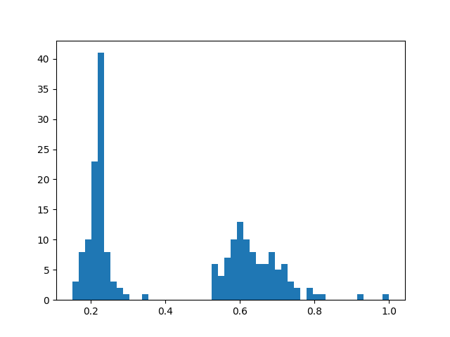

Using Aggregations ¶¶
Datasets are the core data structure in FiftyOne,
allowing you to represent your raw data, labels, and associated metadata. When
you query and manipulate a Dataset object using
dataset views, a DatasetView object is returned, which
represents a filtered view into a subset of the underlying dataset’s contents.
Complementary to this data model, one is often interested in computing
aggregate statistics about datasets, such as label counts, distributions, and
ranges, where each Sample is reduced to a single quantity in the aggregate
results.
The fiftyone.core.aggregations module offers a declarative and
highly-efficient approach to computing summary statistics about your datasets
and views.
Overview ¶¶
All builtin aggregations are subclasses of the Aggregation class, each
encapsulating the computation of a different statistic about your data.
Aggregations are conveniently exposed as methods on all Dataset and
DatasetView objects:
import fiftyone.zoo as foz
dataset = foz.load_zoo_dataset("quickstart")
# List available aggregations
print(dataset.list_aggregations())
# ['bounds', 'count', 'count_values', 'distinct', ..., 'sum']
Think of aggregations as more efficient, concise alternatives to writing explicit loops over your dataset to compute a statistic:
from collections import defaultdict
# Compute label histogram manually
manual_counts = defaultdict(int)
for sample in dataset:
for detection in sample.ground_truth.detections:
manual_counts[detection.label] += 1
# Compute via aggregation
counts = dataset.count_values("ground_truth.detections.label")
print(counts) # same as `manual_counts` above
You can even aggregate on expressions that transform the data in arbitrarily complex ways:
from fiftyone import ViewField as F
# Expression that computes the number of predicted objects
num_objects = F("predictions.detections").length()
# The `(min, max)` number of predictions per sample
print(dataset.bounds(num_objects))
# The average number of predictions per sample
print(dataset.mean(num_objects))
The sections below discuss the available aggregations in more detail. You can
also refer to the fiftyone.core.aggregations module documentation for
detailed examples of using each aggregation.
Note
All aggregations can operate on embedded sample fields using the
embedded.field.name syntax.
Aggregation fields can also include array fields. Most array fields are
automatically unwound, but you can always manually unwind an array using
the embedded.array[].field syntax. See
this section for more details.
Compute bounds ¶¶
You can use the
bounds()
aggregation to compute the [min, max] range of a numeric field of a
dataset:
import fiftyone.zoo as foz
dataset = foz.load_zoo_dataset("quickstart")
# Compute the bounds of the `uniqueness` field
bounds = dataset.bounds("uniqueness")
print(bounds)
# (0.15001302256126986, 1.0)
# Compute the bounds of the detection confidences in the `predictions` field
bounds = dataset.bounds("predictions.detections.confidence")
print(bounds)
# (0.05003104358911514, 0.9999035596847534)
Count items ¶¶
You can use the
count() aggregation
to compute the number of non- None field values in a collection:
import fiftyone.zoo as foz
dataset = foz.load_zoo_dataset("quickstart")
# Compute the number of samples in the dataset
count = dataset.count()
print(count)
# 200
# Compute the number of samples with `predictions`
count = dataset.count("predictions")
print(count)
# 200
# Compute the number of detections in the `ground_truth` field
count = dataset.count("predictions.detections")
print(count)
# 5620
Count values ¶¶
You can use the
count_values()
aggregation to compute the occurrences of field values in a collection:
import fiftyone.zoo as foz
dataset = foz.load_zoo_dataset("quickstart")
# Compute the number of samples in the dataset
counts = dataset.count_values("tags")
print(counts)
# {'validation': 200}
# Compute a histogram of the predicted labels in the `predictions` field
counts = dataset.count_values("predictions.detections.label")
print(counts)
# {'bicycle': 13, 'hot dog': 8, ..., 'skis': 52}
Distinct values ¶¶
You can use the
distinct()
aggregation to compute the distinct values of a field in a collection:
import fiftyone.zoo as foz
dataset = foz.load_zoo_dataset("quickstart")
# Get the distinct tags on the dataset
values = dataset.distinct("tags")
print(values)
# ['validation']
# Get the distinct labels in the `predictions` field
values = dataset.distinct("predictions.detections.label")
print(values)
# ['airplane', 'apple', 'backpack', ..., 'wine glass', 'zebra']
Histogram values ¶¶
You can use the
histogram_values()
aggregation to compute the histograms of numeric fields of a collection:
import numpy as np
import matplotlib.pyplot as plt
import fiftyone.zoo as foz
def plot_hist(counts, edges):
counts = np.asarray(counts)
edges = np.asarray(edges)
left_edges = edges[:-1]
widths = edges[1:] - edges[:-1]
plt.bar(left_edges, counts, width=widths, align="edge")
dataset = foz.load_zoo_dataset("quickstart")
#
# Compute a histogram of the `uniqueness` field
#
counts, edges, other = dataset.histogram_values("uniqueness", bins=50)
plot_hist(counts, edges)
plt.show(block=False)

Schema ¶¶
You can use the
schema()
aggregation to extract the names and types of the attributes of a specified
embedded document field across all samples in a collection.
Schema aggregations are useful for detecting the presence and types of
dynamic attributes of Label fields across a
collection.
import fiftyone.zoo as foz
dataset = foz.load_zoo_dataset("quickstart")
# Extract the names and types of all dynamic attributes on the
# `ground_truth` detections
print(dataset.schema("ground_truth.detections", dynamic_only=True))
{
'area': <fiftyone.core.fields.FloatField object at 0x7fc94015fb50>,
'iscrowd': <fiftyone.core.fields.FloatField object at 0x7fc964869fd0>,
}
You can also use the
list_schema()
aggregation to extract the value type(s) in a list field across all samples in
a collection:
from datetime import datetime
import fiftyone as fo
dataset = fo.Dataset()
sample1 = fo.Sample(
filepath="image1.png",
ground_truth=fo.Classification(
label="cat",
info=[\
fo.DynamicEmbeddedDocument(\
task="initial_annotation",\
author="Alice",\
timestamp=datetime(1970, 1, 1),\
notes=["foo", "bar"],\
),\
fo.DynamicEmbeddedDocument(\
task="editing_pass",\
author="Bob",\
timestamp=datetime.utcnow(),\
),\
],
),
)
sample2 = fo.Sample(
filepath="image2.png",
ground_truth=fo.Classification(
label="dog",
info=[\
fo.DynamicEmbeddedDocument(\
task="initial_annotation",\
author="Bob",\
timestamp=datetime(2018, 10, 18),\
notes=["spam", "eggs"],\
),\
],
),
)
dataset.add_samples([sample1, sample2])
# Determine that `ground_truth.info` contains embedded documents
print(dataset.list_schema("ground_truth.info"))
# fo.EmbeddedDocumentField
# Determine the fields of the embedded documents in the list
print(dataset.schema("ground_truth.info[]"))
# {'task': StringField, ..., 'notes': ListField}
# Determine the type of the values in the nested `notes` list field
# Since `ground_truth.info` is not yet declared on the dataset's schema, we
# must manually include `[]` to unwind the info lists
print(dataset.list_schema("ground_truth.info[].notes"))
# fo.StringField
# Declare the `ground_truth.info` field
dataset.add_sample_field(
"ground_truth.info",
fo.ListField,
subfield=fo.EmbeddedDocumentField,
embedded_doc_type=fo.DynamicEmbeddedDocument,
)
# Now we can inspect the nested `notes` field without unwinding
print(dataset.list_schema("ground_truth.info.notes"))
# fo.StringField
Note
Schema aggregations are used internally by
get_dynamic_field_schema()
to impute the types of undeclared lists and embedded documents in a
dataset.
Sum values ¶¶
You can use the
sum() aggregation to
compute the sum of the (non- None) values of a field in a collection:
import fiftyone.zoo as foz
dataset = foz.load_zoo_dataset("quickstart")
# Compute average confidence of detections in the `predictions` field
print(
dataset.sum("predictions.detections.confidence") /
dataset.count("predictions.detections.confidence")
)
# 0.34994137249820706
Min values ¶¶
You can use the
min() aggregation to
compute the minimum of the (non- None) values of a field in a collection:
import fiftyone.zoo as foz
dataset = foz.load_zoo_dataset("quickstart")
# Compute minimum confidence of detections in the `predictions` field
print(dataset.min("predictions.detections.confidence"))
# 0.05003104358911514
Max values ¶¶
You can use the
max() aggregation to
compute the maximum of the (non- None) values of a field in a collection:
import fiftyone.zoo as foz
dataset = foz.load_zoo_dataset("quickstart")
# Compute maximum confidence of detections in the `predictions` field
print(dataset.max("predictions.detections.confidence"))
# 0.9999035596847534
Mean values ¶¶
You can use the
mean() aggregation to
compute the arithmetic mean of the (non- None) values of a field in a
collection:
import fiftyone.zoo as foz
dataset = foz.load_zoo_dataset("quickstart")
# Compute average confidence of detections in the `predictions` field
print(dataset.mean("predictions.detections.confidence"))
# 0.34994137249820706
Quantiles ¶¶
You can use the
quantiles()
aggregation to compute the quantile(s) of the (non- None) values of a field
in a collection:
import fiftyone.zoo as foz
dataset = foz.load_zoo_dataset("quickstart")
# Compute quantiles of the `uniqueness` field
print(dataset.quantiles("uniqueness", [0.25, 0.5, 0.75, 0.9]))
# [0.22027, 0.33771, 0.62554, 0.69488]
# Compute quantiles of detection confidence in the `predictions` field
quantiles = dataset.quantiles(
"predictions.detections.confidence",
[0.25, 0.5, 0.75, 0.9],
)
print(quantiles)
# [0.09231, 0.20251, 0.56273, 0.94354]
Standard deviation ¶¶
You can use the
std() aggregation to
compute the standard deviation of the (non- None) values of a field in a
collection:
import fiftyone.zoo as foz
dataset = foz.load_zoo_dataset("quickstart")
# Compute standard deviation of the confidence of detections in the
# `predictions` field
print(dataset.std("predictions.detections.confidence"))
# 0.3184061813934825
Values ¶¶
You can use the
values()
aggregation to extract a list containing the values of a field across all
samples in a collection:
import fiftyone.zoo as foz
dataset = foz.load_zoo_dataset("quickstart")
# Extract the `uniqueness` values for all samples
uniqueness = dataset.values("uniqueness")
print(len(uniqueness)) # 200
# Extract the labels for all predictions
labels = dataset.values("predictions.detections.label")
print(len(labels)) # 200
print(labels[0]) # ['bird', ..., 'bear', 'sheep']
Note
Unlike other aggregations,
values() does
not automatically unwind list fields, which ensures that the returned
values match the potentially-nested structure of the documents.
You can opt-in to unwinding specific list fields using the []
syntax, or you can pass the optional unwind=True parameter to unwind
all supported list fields. See Aggregating list fields for more
information.
Advanced usage ¶¶
Aggregating list fields ¶¶
Aggregations that operate on scalar fields can also be applied to the elements
of list fields by appending [] to the list component of the field path.
The example below demonstrates this capability:
import fiftyone as fo
dataset = fo.Dataset()
dataset.add_samples(
[\
fo.Sample(\
filepath="/path/to/image1.png",\
keypoints=fo.Keypoint(points=[(0, 0), (1, 1)]),\
classes=fo.Classification(\
label="cat", confidence=0.9, friends=["dog", "squirrel"]\
),\
),\
fo.Sample(\
filepath="/path/to/image2.png",\
keypoints=fo.Keypoint(points=[(0, 0), (0.5, 0.5), (1, 1)]),\
classes=fo.Classification(\
label="dog", confidence=0.8, friends=["rabbit", "squirrel"],\
),\
),\
]
)
#
# Count the number of keypoints in the dataset
#
# The `points` list attribute is declared on the `Keypoint` class, so it is
# automatically unwound
#
count = dataset.count("keypoints.points")
print(count)
# 5
#
# Compute the values in the `friends` field of the predictions
#
# The `friends` list attribute is a dynamic custom attribute, so we must
# explicitly request that it be unwound
#
counts = dataset.count_values("classes.friends[]")
print(counts)
# {'dog': 1, 'squirrel': 2, 'rabbit': 1}
Note
FiftyOne will automatically unwind all array fields that are defined in the
dataset’s schema without requiring you to explicitly specify this via the
[] syntax. This includes the following cases:
Top-level list fields: When you write an aggregation that refers to a
top-level list field of a dataset; i.e., list_field is automatically
coerced to list_field[], if necessary.
Frame fields: When you write an aggregation that refers to a
frame-level field of a video dataset; i.e.,
frames.classification.label is automatically coerced to
frames[].classification.label if necessary.
Embedded list fields: When you write an aggregation that refers to a
list attribute that is declared on a Sample, Frame, or Label class,
such as the
Classification.tags,
Detections.detections,
or Keypoint.points
attributes; i.e., ground_truth.detections.label is automatically
coerced to ground_truth.detections[].label, if necessary.
Aggregating expressions ¶¶
Aggregations also support performing more complex computations on fields via
the optional expr argument,
which is supported by all aggregations and allows you to specify a
ViewExpression defining an arbitrary transformation of the field you’re
operating on prior to aggregating.
The following examples demonstrate the power of aggregating with expressions:
Note
When aggregating expressions, field names may contain list fields, and such field paths are handled as explained above.
However, there is one important exception when expressions are involved:
fields paths that end in array fields are not automatically unwound,
you must specify that they should be unwound by appending []. This
change in default behavior allows for the possibility that the
ViewExpression you provide is intended to operate on the array as a
whole.
import fiftyone as fo
import fiftyone.zoo as foz
from fiftyone import ViewField as F
dataset = foz.load_zoo_dataset("quickstart")
# Counts the number of predicted objects
# Here, `predictions.detections` is treated as `predictions.detections[]`
print(dataset.count("predictions.detections"))
# Counts the number of predicted objects with confidence > 0.9
# Here, `predictions.detections` is not automatically unwound
num_preds = F("predictions.detections").filter(F("confidence") > 0.9).length()
print(dataset.sum(num_preds))
# Computes the (min, max) bounding box area in normalized coordinates
# Here we must manually specify that we want to unwind terminal list field
# `predictions.detections` by appending `[]`
bbox_area = F("bounding_box")[2] * F("bounding_box")[3]
print(dataset.bounds(F("ground_truth.detections[]").apply(bbox_area)))
Batching aggregations ¶¶
Rather than computing a single aggregation by invoking methods on a Dataset
or DatasetView object, you can also instantiate an Aggregation object
directly. In this case, the aggregation is not tied to any dataset or view,
only to the parameters such as field name that define it.
import fiftyone as fo
# will count the number of samples in a dataset
sample_count = fo.Count()
# will count the labels in a `ground_truth` detections field
count_values = fo.CountValues("ground_truth.detections.label")
# will compute a histogram of the `uniqueness` field
histogram_values = fo.HistogramValues("uniqueness", bins=50)
Instantiating aggregations in this way allows you to execute multiple
aggregations on a dataset or view efficiently in a batch via
aggregate():
import fiftyone.zoo as foz
dataset = foz.load_zoo_dataset("quickstart")
results = dataset.aggregate([sample_count, count_values, histogram_values])
print(results[0])
# 200
print(results[1])
# {'bowl': 15, 'scissors': 1, 'cup': 21, ..., 'vase': 1, 'sports ball': 3}
print(results[2][0]) # counts
# [0, 0, 0, ..., 15, 12, ..., 0, 0]
print(results[2][1]) # edges
# [0.0, 0.02, 0.04, ..., 0.98, 1.0]
Transforming data before aggregating ¶¶
You can use view stages like
map_labels()
in concert with aggregations to efficiently compute statistics on your
datasets.
For example, suppose you would like to compute the histogram of the labels in
a dataset with certain labels grouped into a single category. You can use
map_labels() +
count_values()
to succinctly express this:
import fiftyone as fo
import fiftyone.zoo as foz
dataset = foz.load_zoo_dataset("quickstart")
# Map `cat` and `dog` to `pet`
labels_map = {"cat": "pet", "dog": "pet"}
counts = (
dataset
.map_labels("ground_truth", labels_map)
.count_values("ground_truth.detections.label")
)
print(counts)
# {'toothbrush': 2, 'train': 5, ..., 'pet': 31, ..., 'cow': 22}
Or, suppose you would like to compute the average confidence of a model’s
predictions, ignoring any values less than 0.5. You can use
filter_labels() +
sum() +
count()
to succinctly express this:
import fiftyone as fo
import fiftyone.zoo as foz
from fiftyone import ViewField as F
dataset = foz.load_zoo_dataset("quickstart")
avg_conf = (
dataset
.filter_labels("predictions", F("confidence") >= 0.5)
.mean("predictions.detections.confidence")
)
print(avg_conf)
# 0.8170506501060617
Aggregating frame labels ¶¶
You can compute aggregations on the frame labels of a video dataset by adding
the frames prefix to the relevant frame field name:
import fiftyone as fo
import fiftyone.zoo as foz
dataset = foz.load_zoo_dataset("quickstart-video")
# Count the number of video frames
count = dataset.count("frames")
print(count)
# 1279
# Compute a histogram of per-frame object labels
counts = dataset.count_values("frames.detections.detections.label")
print(counts)
# {'person': 1108, 'vehicle': 7511, 'road sign': 2726}